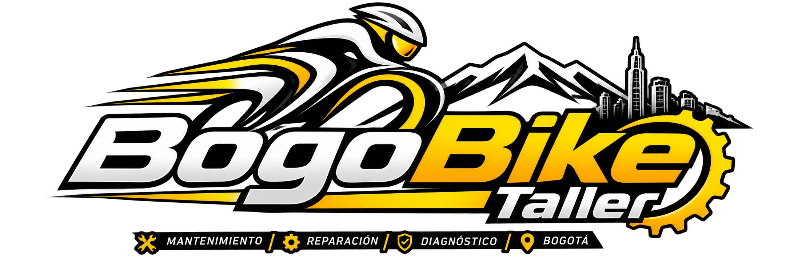

Mantenimiento básico
Para una bici que ya funciona bien y solo necesita ajustes y cuidado periódico.
- La usas con frecuencia y quieres mantenerla al día.
- Los cambios o frenos pierden ajuste poco a poco.
- Quieres revisarla antes de una salida larga.

BogoBike TallerCada proceso está pensado para que tu bici ruede fluida y segura, en la sabana o en las calles de Bogotá. Los valores son aproximados y se confirman con el diagnóstico.
| Servicio | Qué incluye | Tiempo | Valor aprox. |
|---|---|---|---|
| Mantenimiento básico | Ajuste de cambios y frenos, lubricación de cadena, revisión de cazoletas y calibración de presión de llantas. | 2 a 3 horas | $65.000 COP |
| Mantenimiento general Pro | Desarme total, lavado químico especializado, engrase de dirección, centro y masas, y centrado de rines. | 1 día hábil | $140.000 COP |
| Purgado de frenos hidráulicos | Cambio completo de aceite mineral o DOT, purgado de líneas de alta presión y calibración de pastillas de disco. | 1 hora | $50.000 COP |
| Diagnóstico y sincronización | Calibración milimétrica de pacha, desviadores y patilla de cambio con alineador profesional. | 1 hora y media | $45.000 COP |
Los repuestos, si hacen falta, se cotizan aparte y te avisamos antes de cambiarlos.
Para una bici que ya funciona bien y solo necesita ajustes y cuidado periódico.
Para una revisión profunda, con la bici desarmada pieza por pieza.
Cuándo empezó el problema y en qué situación aparece (al frenar, al subir, al cambiar de plato). Nos ayuda a diagnosticar más rápido.
Luces, GPS, alforjas, botella o cualquier accesorio que no necesite revisión, para que no se pierda ni estorbe en el taller.
Sí. Usamos torquímetros calibrados para ajustar cada tornillo al torque indicado y proteger marcos de carbono y aluminio.
Tenemos experiencia especial en transmisiones Shimano y SRAM y en sistemas de frenos hidráulicos.
No. Los valores son del servicio. Si hace falta cambiar una pieza, te la cotizamos y esperamos tu aprobación antes de instalarla.
Depende de la pieza. Te informamos el tiempo en el diagnóstico, antes de empezar.
Probada en ruta, con repuestos originales y lista para rodar.
Escríbenos desde la página de Contacto y coordinamos el día de la revisión.

Cuéntanos qué síntomas tiene y te orientamos.
Agendar revisión